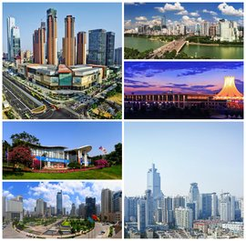
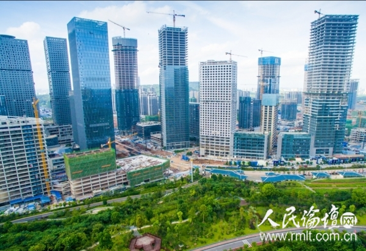
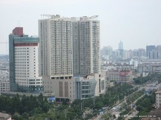
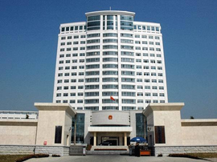
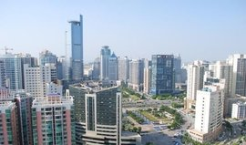
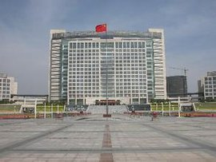

绿城—南宁
网站主页
风景
美食
文化

南宁，简称“邕”，别称绿城、邕城，是广西壮族自治区首府、
北部湾城市群核心城市，国务院批复确定的中国北部湾经济区中心城市、
西南地区连接出海通道的综合交通枢纽 。截至2018年，全市下辖7个区、
5个县，总面积22112平方千米，建成区面积372平方千米，常住人口
725.41万人，城镇人口452.61万人，城镇化率62.4%。
南宁地处中国华南地区、广西南部，中国华南、西南和东南亚经济
圈的结合部，是泛北部湾经 济合作、大湄公河次区域合作、泛珠三角
合作等多区域合作的交汇点，也是中国面向东盟开放合作的前沿城市、
中国—东盟博览会永久举办地、国家“一带一路”有机衔接的重要门户
城市，南部战区陆军机关驻地。 南宁古属百越之地，东晋大兴元年
（318年），建晋兴郡，为郡治所在地，南宁建制从此开始，至今已有
1700年历史；唐朝贞观年间（632年），更名邕州，设邕州都督府，
南宁的简称“邕”由此而来；元朝泰定元年（1324年），邕州路改名
为南宁路，取南疆安宁之意，南宁得名始于此。南宁是一座历史悠久
的文化古城，同时也是一个以壮族为主的多民族和睦相处的现代化城市。
不悔当初
姓名:马锦骞
爱好:听音乐
QQ:1242462621
性别:男
年龄:22
邮箱:@qq.com
座右铭：没有理所当然的成功，也没有毫无道理的平庸。